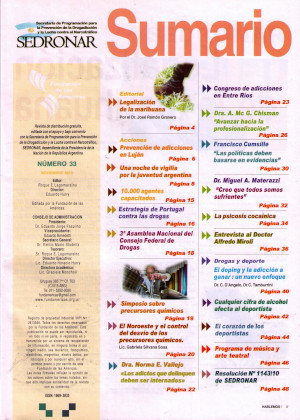

Melhorar e aprimorar!

SUMARIO
Editorial
Legalización de la marihuana
Por el Dr. José Ramón Granero
Página 4
Prevención de adicciones en Luján
Página 6
Una noche de vigilia por la juventud argentina
Página 8
10.000 agentes capacitados
Página 15
Estrategia de Portugal contra las drogas
Página 16
3° Asamblea Nacional del consejo Federal de Drogas
Página 18
Simposio sobre precursores químicos
Página 19
El Noreste y el control del desvio de los precursores químicos.
Página 20
Dra. Norma E. Vallejo eLos adicos que dellinguen debem ser internados
Página 22
Congreso de adicciones en Entre Rios
Página 23